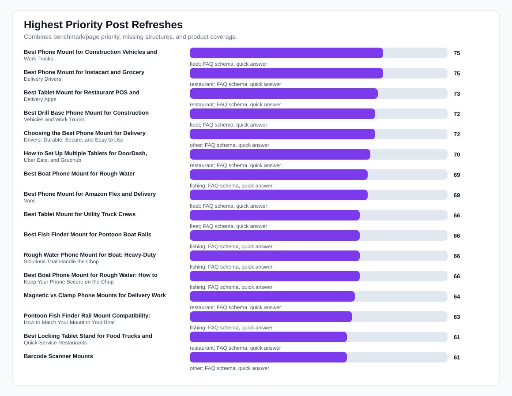
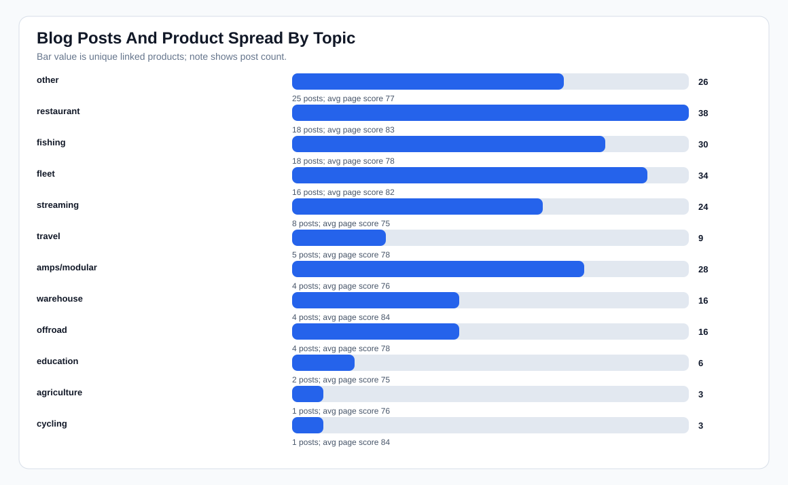
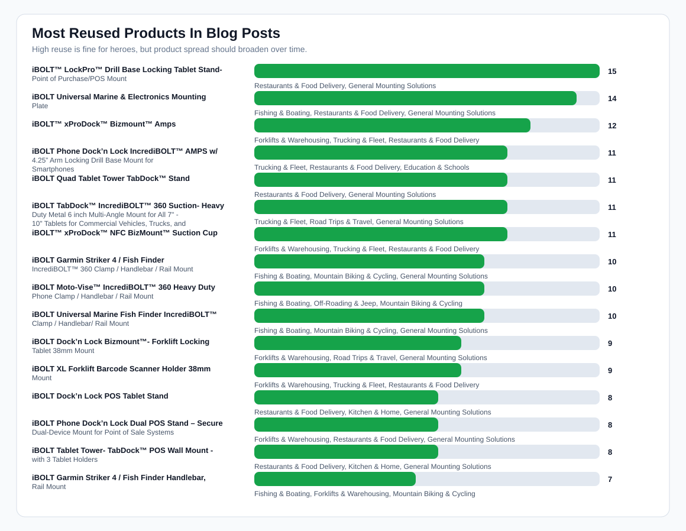
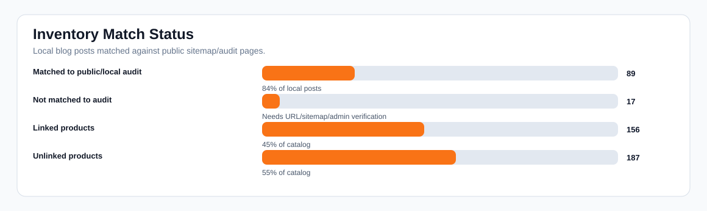

iBOLT Blog Inventory and Product Spread Audit
Readout: The blog system has a real content base, but product coverage and page matching are uneven. The top cleanup is to connect high-risk benchmark prompts to the right live pages, reduce overlapping pages, and spread product mentions beyond the same few marine and restaurant SKUs.
Local posts
106
106 synced to Shopify
Sitemap pages
142
113 audited
Matched posts
89/106
17 not matched to audit
Products
343
156 linked in posts
Unlinked products
187
55% of catalog
Duplicate pairs
18
possible topic overlap
Charts




Highest Priority Post Refreshes
| Priority | Post | Overall | AI page score | Products | Prompts | Fixes |
|---|---|---|---|---|---|---|
| 75 | Best Phone Mount for Construction Vehicles and Work Trucks Trucking & Fleet |
87 | 76 | 3 | best phone mount for construction vehicles and work trucks | FAQ schema, quick answer, comparison block, image alt text |
| 75 | Best Phone Mount for Instacart and Grocery Delivery Drivers Restaurants & Food Delivery |
87 | 76 | 3 | best phone mount for Instacart and grocery delivery drivers | FAQ schema, quick answer, comparison block, image alt text |
| 73 | Best Tablet Mount for Restaurant POS and Delivery Apps Restaurants & Food Delivery |
87 | 76 | 3 | best tablet mount for restaurant POS and delivery apps | FAQ schema, quick answer, comparison block, image alt text |
| 72 | Best Drill Base Phone Mount for Construction Vehicles and Work Trucks Trucking & Fleet |
88 | 76 | 5 | best phone mount for construction vehicles and work trucks | FAQ schema, quick answer, comparison block, image alt text |
| 72 | Choosing the Best Phone Mount for Delivery Drivers: Durable, Secure, and Easy to Use unmapped |
89 | 76 | 5 | best phone mount for Instacart and grocery delivery drivers | FAQ schema, quick answer, comparison block, image alt text |
| 70 | How to Set Up Multiple Tablets for DoorDash, Uber Eats, and Grubhub Restaurants & Food Delivery |
87 | 76 | 3 | set up multiple tablets for DoorDash Uber Eats and Grubhub | FAQ schema, quick answer, comparison block, image alt text |
| 69 | Best Boat Phone Mount for Rough Water Fishing & Boating |
84 | 84 | 3 | best heavy duty vehicle phone mount | FAQ schema, quick answer, image alt text |
| 69 | Best Phone Mount for Amazon Flex and Delivery Vans Trucking & Fleet |
87 | 84 | 3 | best phone mount for Amazon Flex and delivery vans | FAQ schema, quick answer, image alt text |
| 66 | Best Tablet Mount for Utility Truck Crews Trucking & Fleet |
84 | 76 | 3 | best tablet mount for food truck | FAQ schema, quick answer, comparison block, image alt text |
| 66 | Best Fish Finder Mount for Pontoon Boat Rails Fishing & Boating |
84 | 84 | 3 | best fish finder mount for small boat | FAQ schema, quick answer, image alt text |
| 66 | Rough Water Phone Mount for Boat: Heavy-Duty Solutions That Handle the Chop Fishing & Boating |
89 | 84 | 8 | best heavy duty vehicle phone mount | FAQ schema, quick answer, image alt text |
| 66 | Best Boat Phone Mount for Rough Water: How to Keep Your Phone Secure on the Chop Fishing & Boating |
89 | 84 | 9 | best heavy duty vehicle phone mount | FAQ schema, quick answer, image alt text |
| 64 | Magnetic vs Clamp Phone Mounts for Delivery Work Restaurants & Food Delivery |
87 | 84 | 3 | magnetic vs clamp phone mounts for delivery work | FAQ schema, quick answer, image alt text |
| 63 | Pontoon Fish Finder Rail Mount Compatibility: How to Match Your Mount to Your Boat Fishing & Boating |
86 | 84 | 9 | best fish finder mount for small boat | FAQ schema, quick answer, image alt text |
| 61 | Best Locking Tablet Stand for Food Trucks and Quick-Service Restaurants Restaurants & Food Delivery |
87 | 84 | 3 | best locking tablet stand for food trucks and quick service restaurants | FAQ schema, quick answer, image alt text |
| 61 | Barcode Scanner Mounts unmapped |
84 | 4 | best barcode scanner mount for forklift | FAQ schema, quick answer, image alt text | |
| 61 | Best Barcode Scanner Mounts for Forklifts and Warehouses (2026) unmapped |
84 | 5 | best barcode scanner mount for forklift | FAQ schema, quick answer, image alt text | |
| 58 | Best Tablet and Phone Mounts for Trucks and ELD Compliance (2026) unmapped |
94 | 2 | best ELD mount for trucks | FAQ schema, image alt text | |
| 57 | Best Drill-Base Phone Mount for Semi Trucks Trucking & Fleet |
87 | 84 | 3 | best drill base phone mount for semi trucks | FAQ schema, quick answer, image alt text |
| 57 | Best Tablet Mounts for Delivery Apps: Complete Setup Guide for Restaurants Restaurants & Food Delivery |
86 | 94 | 10 | best tablet mount; best multi tablet mount; best restaurant tablet mount | FAQ schema, image alt text |
| 57 | Restaurant Tablet Mount Setup: Complete Guide for Toast, Square & Delivery Apps Restaurants & Food Delivery |
86 | 94 | 14 | best tablet mount; best multi tablet mount; best restaurant tablet mount | FAQ schema, image alt text |
| 56 | Best Garmin Fish Finder Mount: How to Choose the Right Setup for Your Boat or Kayak Fishing & Boating |
87 | 84 | 8 | best fish finder; best fish finder in water; best budget fish finder mount | quick answer, image alt text |
| 55 | Best Locking Phone Mount for Shared Delivery Vehicles Trucking & Fleet |
87 | 94 | 3 | best locking phone mount for shared delivery vehicles | FAQ schema, image alt text |
| 54 | Commercial-Grade Phone Mounts for Delivery Drivers Road Trips & Travel |
91 | 83 | 3 | commercial grade phone mount for delivery drivers | Article/BlogPosting schema |
| 53 | Best Kayak Fish Finder Mounts for Secure Removable Setups Fishing & Boating |
91 | 83 | 3 | best kayak fish finder mount | Article/BlogPosting schema |
| 51 | iBOLT Dock'n Lock for Restaurant Counters Restaurants & Food Delivery |
87 | 76 | 3 | iBolt Dock’n Lock for restaurant counters | FAQ schema, quick answer, comparison block, image alt text |
| 51 | Best Phone Mount for Delivery Drivers Restaurants & Food Delivery |
91 | 83 | 10 | best phone mount for delivery drivers | Article/BlogPosting schema |
| 50 | Kayak Fish Finder Mount Setup: A Complete Guide to Secure, Removable Electronics Mounting Fishing & Boating |
80 | 83 | 11 | best kayak fish finder mount | Article/BlogPosting schema |
| 45 | iBOLT vs iOttie for Delivery Driving Restaurants & Food Delivery |
87 | 84 | 3 | iBolt vs iOttie for delivery driving | FAQ schema, quick answer, image alt text |
| 44 | Forklift & Warehouse Tablet Mounts unmapped |
94 | 4 | best tablet mount for warehouse; best forklift tablet mount | FAQ schema, image alt text |
Most Used Products In Blog Content
| Posts | Product | Verticals | Linked posts |
|---|---|---|---|
| 15 | iBOLT™ LockPro™ Drill Base Locking Tablet Stand- Point of Purchase/POS Mount ibolttm-lockprotm-drill-base-locking-tablet-stand-point-of-purchase-pos-mount |
Restaurants & Food Delivery, General Mounting Solutions | Best Tablet Mount for Restaurant POS and Delivery Apps; Best Locking Tablet Stand for Food Trucks and Quick-Service Restaurants; iBOLT vs Bouncepad vs Mount-It for Restaurant Tablet Security; iBOLT Tablet Tower System Featured at National Restaurant Association Show 2026 |
| 14 | iBOLT Universal Marine & Electronics Mounting Plate ibolt-universal-marine-electronics-mounting-plate |
Fishing & Boating, Restaurants & Food Delivery, General Mounting Solutions | Best Fish Finder Mount for Pontoon Boat Rails; Rough Water Phone Mount for Boat: Heavy-Duty Solutions That Handle the Chop; Best Boat Phone Mount for Rough Water: How to Keep Your Phone Secure on the Chop; Pontoon Fish Finder Rail Mount Compatibility: How to Match Your Mount to Your Boat |
| 12 | iBOLT™ xProDock™ Bizmount™ Amps xprodock-bizmount-amps-smartphone-drill-base-mount-ibbz-33931 |
Forklifts & Warehousing, Trucking & Fleet, Restaurants & Food Delivery, Education & Schools, Content Creation & Streaming, Kitchen & Home, Road Trips & Travel, General Mounting Solutions | Best Drill Base Phone Mount for Construction Vehicles and Work Trucks; Best Phone Mount for Amazon Flex and Delivery Vans; Commercial-Grade Phone Mounts for Delivery Drivers; iBOLT vs iOttie for Delivery Driving |
| 11 | iBOLT Phone Dock’n Lock IncrediBOLT™ AMPS w/ 4.25” Arm Locking Drill Base Mount for Smartphones ibolt-phone-dock-n-lock-incredibolt-amps-w-4-25-double-socket-arm-locking-drill-base-mount-for-smartphones-great-for-trucks-eld-s-wall-mounting-sprinter-vans-etc |
Trucking & Fleet, Restaurants & Food Delivery, Education & Schools, Kitchen & Home, Road Trips & Travel, General Mounting Solutions | Best Drill Base Phone Mount for Construction Vehicles and Work Trucks; Best Drill-Base Phone Mount for Semi Trucks; Best Locking Phone Mount for Shared Delivery Vehicles; Commercial-Grade Phone Mounts for Delivery Drivers |
| 11 | iBOLT Quad Tablet Tower TabDock™ Stand ibolt-quad-tablet-tower-stand |
Restaurants & Food Delivery, General Mounting Solutions | Best Tablet Mount for Restaurant POS and Delivery Apps; iBOLT Tablet Tower System Featured at National Restaurant Association Show 2026; iBOLT Mounts and Toast POS: Powering Modern Restaurant Technology; Restaurant & POS Mounts |
| 11 | iBOLT TabDock™ IncrediBOLT™ 360 Suction- Heavy Duty Metal 6 inch Multi-Angle Mount for All 7" - 10" Tablets for Commercial Vehicles, Trucks, and ELD Devices ibolt-tabdocktm-incredibolttm-360-suction-heavy-duty-metal-6-inch-multi-angle-mount-for-all-7-10-tablets-for-commercial-vehicles-trucks-and-eld-devices |
Trucking & Fleet, Road Trips & Travel, General Mounting Solutions | Best Tablet and Phone Mounts for Trucks and ELD Compliance (2026); iBOLT Mounts Supports ELD Compliance for America's Commercial Fleets; iBOLT Confirms Universal Mounting Solutions for Samsung Galaxy Tab A9 and S9 Series; Best Rugged Tablet Mount for Field Service Vans |
| 11 | iBOLT™ xProDock™ NFC BizMount™ Suction Cup heavy-duty-smartphone-suction-cup-mount-xprodock-bizmount-ibbz-33785 |
Forklifts & Warehousing, Trucking & Fleet, Restaurants & Food Delivery, Education & Schools, Kitchen & Home, Road Trips & Travel, General Mounting Solutions | Best Phone Mount for Instacart and Grocery Delivery Drivers; Best Phone Mount for Amazon Flex and Delivery Vans; Magnetic vs Clamp Phone Mounts for Delivery Work; Commercial-Grade Phone Mounts for Delivery Drivers |
| 10 | iBOLT Garmin Striker 4 / Fish Finder IncrediBOLT™ 360 Clamp / Handlebar / Rail Mount ibolt-garmin-striker-4-fish-finder-incredibolt-360-clamp-handlebar-rail-mount |
Fishing & Boating, Mountain Biking & Cycling, General Mounting Solutions | Best Boat Phone Mount for Rough Water: How to Keep Your Phone Secure on the Chop; Pontoon Fish Finder Rail Mount Compatibility: How to Match Your Mount to Your Boat; Best Garmin Fish Finder Mount: How to Choose the Right Setup for Your Boat or Kayak; Best Kayak Fish Finder Mounts for Secure Removable Setups |
| 10 | iBOLT Moto-Vise™ IncrediBOLT™ 360 Heavy Duty Phone Clamp / Handlebar / Rail Mount ibolt-moto-vise-incredibolt-360-heavy-duty-phone-clamp-handlebar-rail-mount |
Fishing & Boating, Off-Roading & Jeep, Mountain Biking & Cycling, General Mounting Solutions | Choosing the Best Phone Mount for Delivery Drivers: Durable, Secure, and Easy to Use; Best Boat Phone Mount for Rough Water; Rough Water Phone Mount for Boat: Heavy-Duty Solutions That Handle the Chop; Best Boat Phone Mount for Rough Water: How to Keep Your Phone Secure on the Chop |
| 10 | iBOLT Universal Marine Fish Finder IncrediBOLT™ Clamp / Handlebar/ Rail Mount ibolt-universal-marine-fish-finder-incredibolt-clamp-handlebar-rail-mount |
Fishing & Boating, Mountain Biking & Cycling, General Mounting Solutions | Best Fish Finder Mount for Pontoon Boat Rails; Best Boat Phone Mount for Rough Water: How to Keep Your Phone Secure on the Chop; Pontoon Fish Finder Rail Mount Compatibility: How to Match Your Mount to Your Boat; Kayak Fish Finder Mount Setup: A Complete Guide to Secure, Removable Electronics Mounting |
| 9 | iBOLT Dock’n Lock Bizmount™- Forklift Locking Tablet 38mm Mount ibolt-dock-n-lock-bizmount™-forklift-locking-tablet-38mm-mount |
Forklifts & Warehousing, Road Trips & Travel, General Mounting Solutions | Best Barcode Scanner Mounts for Forklifts and Warehouses (2026); Forklift & Warehouse Tablet Mounts; Best Forklift Tablet Mounts for Warehouses (2026 Comparison); iBOLT Launches Next-Generation Industrial Forklift Mounting System |
| 9 | iBOLT XL Forklift Barcode Scanner Holder 38mm Mount ibolt-xl-forklift-barcode-scanner-holder-38mm-mount |
Forklifts & Warehousing, Trucking & Fleet, Restaurants & Food Delivery, General Mounting Solutions | Barcode Scanner Mounts; Best Barcode Scanner Mounts for Forklifts and Warehouses (2026); Forklift & Warehouse Tablet Mounts; Best Forklift Tablet Mounts for Warehouses (2026 Comparison) |
| 8 | iBOLT Dock’n Lock POS Tablet Stand ibolt-dock-n-lock-pos-tablet-stand |
Restaurants & Food Delivery, Kitchen & Home, General Mounting Solutions | Best Tablet Mounts for Delivery Apps: Complete Setup Guide for Restaurants; Restaurant Tablet Mount Setup: Complete Guide for Toast, Square & Delivery Apps; Best Phone Mount for Delivery Drivers; AMPS VESA Ball Mount Sizes: Complete Guide to Device Mounting Standards |
| 8 | iBOLT Phone Dock’n Lock Dual POS Stand – Secure Dual-Device Mount for Point of Sale Systems ibolt-phone-dock-n-lock-dual-pos-stand-secure-dual-device-mount-for-point-of-sale-systems |
Forklifts & Warehousing, Restaurants & Food Delivery, General Mounting Solutions | Restaurant Tablet Mount Setup: Complete Guide for Toast, Square & Delivery Apps; iBOLT Mounts and Toast POS: Powering Modern Restaurant Technology; Complete Guide to Forklift Tablet Scanner Mounts: Boost Warehouse Productivity with Industrial Mounting Solutions; Restaurant & POS Mounts |
| 8 | iBOLT Tablet Tower- TabDock™ POS Wall Mount - with 3 Tablet Holders ibolt-tablet-tower-tabdock-point-of-purchase-pos-wall-mount-with-3-tablet-holders |
Restaurants & Food Delivery, Kitchen & Home, General Mounting Solutions | How to Set Up Multiple Tablets for DoorDash, Uber Eats, and Grubhub; Best Tablet Mounts for Delivery Apps: Complete Setup Guide for Restaurants; Restaurant Tablet Mount Setup: Complete Guide for Toast, Square & Delivery Apps; iBOLT Tablet Tower System Featured at National Restaurant Association Show 2026 |
| 7 | iBOLT Garmin Striker 4 / Fish Finder Handlebar, Rail Mount ibolt-garmin-striker-4-fish-finder-handlebar-rail-mount |
Fishing & Boating, Forklifts & Warehousing, Mountain Biking & Cycling, General Mounting Solutions | Pontoon Fish Finder Rail Mount Compatibility: How to Match Your Mount to Your Boat; Best Garmin Fish Finder Mount: How to Choose the Right Setup for Your Boat or Kayak; Best Kayak Fish Finder Mounts for Secure Removable Setups; Kayak Fish Finder Mount Setup: A Complete Guide to Secure, Removable Electronics Mounting |
| 7 | iBOLT LockPro FlexPro Heavy Duty Locking Tablet Seat Rail Mount ibolt-lockpro-flexpro-heavy-duty-locking-tablet-seat-rail-mount |
Trucking & Fleet, Restaurants & Food Delivery, Road Trips & Travel, General Mounting Solutions | Forklift & Warehouse Tablet Mounts; Best Forklift Tablet Mounts for Warehouses (2026 Comparison); What Makes Forklift Mounting Different; iBOLT LockPro Series: Industrial-Grade Security for Unattended Tablets in Warehouses and Retail |
| 7 | iBOLT Phone Dock'n Lock IncrediBOLT™ 360- Locking Phone Multi-Angle Drill Base Mount ibolt-phone-dock-n-lock-incredibolt-360-heavy-duty-industrial-composite-locking-multi-angle-drill-base-mount-for-smartphones |
Forklifts & Warehousing, Restaurants & Food Delivery, Education & Schools, Kitchen & Home, Road Trips & Travel, General Mounting Solutions | Best Phone Mount for Construction Vehicles and Work Trucks; Magnetic vs Clamp Phone Mounts for Delivery Work; Best Drill-Base Phone Mount for Semi Trucks; Best Locking Phone Mount for Shared Delivery Vehicles |
| 7 | iBOLT TabDock MagDock 360 Magnetic Tablet Mount – Heavy-Duty Forklift & Warehouse Holder ibolt-tabdock-magdock-360-magnetic-tablet-mount-heavy-duty-forklift-warehouse-holder |
Forklifts & Warehousing, General Mounting Solutions | Forklift & Warehouse Tablet Mounts; Best Forklift Tablet Mounts for Warehouses (2026 Comparison); iBOLT Confirms Universal Mounting Solutions for Samsung Galaxy Tab A9 and S9 Series; iBOLT Launches Next-Generation Industrial Forklift Mounting System |
| 7 | iBOLT Universal Marine Fish Finder Handlebar/ Rail Mount ibolt-universal-marine-fish-finder-handlebar-rail-mount |
Fishing & Boating, Forklifts & Warehousing, Mountain Biking & Cycling, General Mounting Solutions | Best Kayak Fish Finder Mounts for Secure Removable Setups; Best No-Drill Fish Finder Mounts for Aluminum Boats and Jon Boats; Best Fish Finder Mount for Small Boats: Comparison and Buyer's Guide; Best Fish Finder Mounts That Stay Put and Do Not Bounce Loose |
| 7 | iBOLT™ 25mm / 1 inch Ball Composite Universal Marine Fish Finder Mounting Plate ibolt-25mm-1-inch-ball-composite-universal-marine-fish-finder-mounting-plate |
Fishing & Boating, Restaurants & Food Delivery, General Mounting Solutions | Pontoon Fish Finder Rail Mount Compatibility: How to Match Your Mount to Your Boat; Best Garmin Fish Finder Mount: How to Choose the Right Setup for Your Boat or Kayak; Kayak Fish Finder Mount Setup: A Complete Guide to Secure, Removable Electronics Mounting; Best No-Drill Fish Finder Mounts for Aluminum Boats and Jon Boats |
| 7 | iBOLT™ TabDock™ Bizmount™ AMPs tabdock-bizmount-amps-heavy-duty-drill-base-tablet-mount-ibbz-33921 |
Forklifts & Warehousing, Trucking & Fleet, Off-Roading & Jeep, Restaurants & Food Delivery, Education & Schools, Agriculture & Farming, Kitchen & Home, Road Trips & Travel, General Mounting Solutions | Best Tablet Mount for Utility Truck Crews; Best Phone and Action Camera Mounts for UTV Trails, Jeeps, and Overlanding Rigs; Best Rugged Tablet Mount for Field Service Vans; Best Tablet Mount for School Bus and Transportation Fleets |
| 6 | Build Your Own Mount build-your-own-mount |
General Mounting Solutions | Build Your Own Mount / Modularity; iBOLT Introduces Mount Configurator 2.0: Build Your Perfect Custom Mounting Solution; AMPS VESA Ball Mount Sizes: Complete Guide to Device Mounting Standards; How the Modular System Works |
| 6 | iBOLT 1/4 20 Camera Screw IncrediBOLT Suction Cup Mount – Secure, Adjustable Mount for Cameras & Accessories ibolt-1-4-20-camera-screw-incredibolt-suction-cup-mount-secure-adjustable-mount-for-cameras-accessories |
Trucking & Fleet, Education & Schools, Content Creation & Streaming, Kitchen & Home, Road Trips & Travel, General Mounting Solutions | The Complete Guide to Overhead Livestream Setup: Best Phone and Camera Mounts for Content Creators; Best Overhead Camera Mount for Product Videos: The Complete Setup Guide for Sellers; Best Overhead Camera Rig for Product Photography; Overhead Camera Mount for Product Photography: Complete Setup Guide |
| 6 | iBOLT Dock’n Lock POS Phone Stand ibolt-dock-n-lock-pos-phone-stand |
Restaurants & Food Delivery, Kitchen & Home, General Mounting Solutions | Best Tablet Mounts for Delivery Apps: Complete Setup Guide for Restaurants; Restaurant Tablet Mount Setup: Complete Guide for Toast, Square & Delivery Apps; Best Phone Mount for Delivery Drivers; AMPS VESA Ball Mount Sizes: Complete Guide to Device Mounting Standards |
| 6 | iBOLT Phone Dock'n Lock 2" IncrediBOLT™ AMPS Drill Base Mount ibolt-phone-dock-n-lock-incredibolt-amps-drill-base-mount-for-phones |
Forklifts & Warehousing, Trucking & Fleet, Restaurants & Food Delivery, General Mounting Solutions | Best Drill Base Phone Mount for Construction Vehicles and Work Trucks; Best Locking Phone Mount for Shared Delivery Vehicles; iBOLT Phone Mounts for DoorDash and Uber Eats Drivers; iBOLT vs ProClip vs RAM: Which Phone Mount Actually Survives Delivery Van Life? |
| 6 | iBOLT TabDock POS Tablet Stand ibolt-tabdock-pos-tablet-stand |
Restaurants & Food Delivery, Kitchen & Home, General Mounting Solutions | Best Tablet Mounts for Delivery Apps: Complete Setup Guide for Restaurants; Restaurant Tablet Mount Setup: Complete Guide for Toast, Square & Delivery Apps; Best Phone Mount for Delivery Drivers; AMPS VESA Ball Mount Sizes: Complete Guide to Device Mounting Standards |
| 6 | iBOLT™ 25mm / 1 inch Composite Universal Marine Electronic Fish Finder Drill Base Mount ibolt-25mm-1-inch-composite-universal-marine-electronic-fish-finder-to-composite-rectangular-amps-pattern-drill-base-dual-ball-mount |
Fishing & Boating, Restaurants & Food Delivery, General Mounting Solutions | Pontoon Fish Finder Rail Mount Compatibility: How to Match Your Mount to Your Boat; Best Garmin Fish Finder Mount: How to Choose the Right Setup for Your Boat or Kayak; Kayak Fish Finder Mount Setup: A Complete Guide to Secure, Removable Electronics Mounting; Best Fish Finder Mounts That Stay Put and Do Not Bounce Loose |
| 6 | iBOLT™ xProDock™ Bizmount™ Console- Phone Cup Holder Mount xprodock-bizmount-console-heavy-duty-phone-cup-holder-mount |
Forklifts & Warehousing, Trucking & Fleet, Road Trips & Travel, General Mounting Solutions | Best Phone Mount for Construction Vehicles and Work Trucks; Best Phone Mount for Delivery Drivers; iBOLT vs RAM for Fleet Phone Mounting; iBOLT Phone Mounts for DoorDash and Uber Eats Drivers |
| 6 | iBOLT™ xProDock™ Bizmount™ Wedge xprodock-bizmount-wedge-smartphone-seat-wedge-mount-ibbz-33930 |
Forklifts & Warehousing, Trucking & Fleet, Road Trips & Travel, General Mounting Solutions | Best Phone Mount for Amazon Flex and Delivery Vans; Best Phone Mount for Delivery Drivers; Fleet Phone Mount Standardization Checklist: How to Deploy the Right Mounts Across Every Vehicle; iBOLT vs iOttie for Delivery Drivers |
Unlinked Product Opportunities
| Product | Handle | Verticals | Reason |
|---|---|---|---|
| ChargeDock USB-C | chargedock-usb-c-android | Trucking & Fleet, Education & Schools, Kitchen & Home, Road Trips & Travel, General Mounting Solutions | No detected blog links; maps to high-risk topic(s): fleet |
| iBOLT ¼ 20” Camera Screw IncrediBOLT™ AMPS w/ 2” Single Socket Arm Drill Base Mount | ibolt-20-camera-screw-incredibolt-amps-w-2-single-socket-arm-drill-base-mount | Restaurants & Food Delivery, Content Creation & Streaming, General Mounting Solutions | No detected blog links; maps to high-risk topic(s): restaurant |
| iBOLT ¼ 20” Camera Screw IncrediBOLT™ AMPS w/ 4.25” Double Socket Arm- Drill Base Mount | ibolt-20-camera-screw-incredibolt-amps-w-4-25-double-socket-arm-drill-base-mount | Restaurants & Food Delivery, Content Creation & Streaming, General Mounting Solutions | No detected blog links; maps to high-risk topic(s): restaurant |
| iBOLT ¼” 20 Camera Screw Bizmount™ Suction Cup Mount - for Industry Standard ¼” 20 Accessories | ibolt-20-camera-screw-bizmount-suction-cup-mount-for-industry-standard-20-accessories-cameras-dash-cams-camera-flashes-etc | Forklifts & Warehousing, Trucking & Fleet, Restaurants & Food Delivery, Content Creation & Streaming, Road Trips & Travel, General Mounting Solutions | No detected blog links; maps to high-risk topic(s): warehouse, fleet, restaurant |
| iBOLT 17mm Clamp Mount for Handlebars, Poles, Posts- For GoPro Hero Action Cameras, ¼ 20" Camera Screw | ibolt-17mm-clamp-mount-for-handlebars-poles-posts-for-gopro-hero-action-cameras-20-camera-screw | Restaurants & Food Delivery, Content Creation & Streaming, Mountain Biking & Cycling, General Mounting Solutions | No detected blog links; maps to high-risk topic(s): restaurant |
| iBOLT 17mm Dual Ball Clamp Mount for Handlebars, Poles, Posts for Garmin GPS and iBOLT Phone Holders | ibolt-17mm-dual-ball-horizontal-clamp-mount-for-handlebars-poles-posts | Restaurants & Food Delivery, Mountain Biking & Cycling, General Mounting Solutions | No detected blog links; maps to high-risk topic(s): restaurant |
| iBOLT 17mm Dual Ball Clamping Mount for Handlebars, Poles, Posts for Garmin GPS Systems and iBOLT Phone Holders | ibolt-17mm-dual-ball-clamping-mount-for-handlebars-poles-posts-compatible-w-garmin-gps-systems-and-ibolt-phone-holders | Restaurants & Food Delivery, Mountain Biking & Cycling, General Mounting Solutions | No detected blog links; maps to high-risk topic(s): restaurant |
| iBOLT 17mm Dual Ball to “Sticky” Suction Cup Mount Base compatible w/ Garmin GPS and iBOLT Phone Holders | ibolt-17mm-dual-ball-to-sticky-suction-cup-mount-base-compatible-w-garmin-gps-and-ibolt-phone-holders | Trucking & Fleet, Road Trips & Travel, General Mounting Solutions | No detected blog links; maps to high-risk topic(s): fleet |
| iBOLT 17mm Dual Ball to AMPs Drill Base Mount compatible w/ Garmin GPS and iBOLT Phone Holders | ibolt-17mm-dual-ball-to-amps-drill-base-mount-base-compatible-w-garmin-gps-and-ibolt-phone-holders | Restaurants & Food Delivery, Road Trips & Travel, General Mounting Solutions | No detected blog links; maps to high-risk topic(s): restaurant |
| iBOLT 17mm Dual Ball to Round Metal AMPs Drill Base Mount for Garmin GPS and iBOLT Phone Holders | ibolt-17mm-dual-ball-to-round-metal-amps-drill-base-mount-compatible-w-garmin-gps-and-ibolt-phone-holders | Restaurants & Food Delivery, Road Trips & Travel, General Mounting Solutions | No detected blog links; maps to high-risk topic(s): restaurant |
| iBOLT 17mm Dual Ball Vertical Clamp Mount for Handlebars, Poles, Posts for Garmin GPS Systems and iBOLT Phone Holders | ibolt-17mm-dual-ball-vertical-clamp-mount-for-handlebars-poles-posts-compatible-w-garmin-gps-systems | Restaurants & Food Delivery, Mountain Biking & Cycling, General Mounting Solutions | No detected blog links; maps to high-risk topic(s): restaurant |
| iBOLT 17mm ExtendiBOLT Triple Suction Cup Mount | ibolt-17mm-extendibolt-triple-suction-cup-mount | Trucking & Fleet, Restaurants & Food Delivery, Road Trips & Travel, General Mounting Solutions | No detected blog links; maps to high-risk topic(s): fleet, restaurant |
| iBOLT 20mm Metal Ball to ¼ 20 Camera Screw Mount Adapter - for All Industry Standard 20mm mounts | ibolt-20mm-metal-ball-to-20-camera-screw-mount-adapter-for-all-industry-standard-20mm-mounts | Restaurants & Food Delivery, Content Creation & Streaming, Agriculture & Farming, General Mounting Solutions | No detected blog links; maps to high-risk topic(s): restaurant |
| iBOLT 20mm Metal Ball to Headrest Mounting Bracket | ibolt-20mm-metal-ball-to-headrest-mounting-bracket | Trucking & Fleet, Restaurants & Food Delivery, Road Trips & Travel, General Mounting Solutions | No detected blog links; maps to high-risk topic(s): fleet, restaurant |
| iBolt 20mm to 20mm Metal Extension Ball Adapter | ibolt-20mm-metal-ball-to-20-camera-screw-mount-adapter-for-all-industry-standard-20mm-mounts-1 | Restaurants & Food Delivery, Content Creation & Streaming, General Mounting Solutions | No detected blog links; maps to high-risk topic(s): restaurant |
| iBOLT 25mm / 1 inch Composite AMPS Adapter Plate | ibolt-25mm-1-inch-composite-amps-adapter-plate-dual-ball-socket-mounting-arms | Restaurants & Food Delivery, Road Trips & Travel, General Mounting Solutions | No detected blog links; maps to high-risk topic(s): restaurant |
| iBOLT 25mm / 1 inch to Dual 17mm Metal Ball Adapter | ibolt-25mm-1-inch-to-dual-metal-17mm-composite-ball-adapter | Restaurants & Food Delivery, General Mounting Solutions | No detected blog links; maps to high-risk topic(s): restaurant |
| iBOLT 25mm / 1 inch to Dual 22mm Ball Adapter | ibolt-25mm-1-inch-to-dual-17mm-metal-ball-adapter-copy | Restaurants & Food Delivery, General Mounting Solutions | No detected blog links; maps to high-risk topic(s): restaurant |
| iBOLT 25mm/ 1-inch dualMag Industrial Strength Magnetic Base | ibolt-25mm-1-inch-dualmag-industrial-strength-magnetic-base | Forklifts & Warehousing, Content Creation & Streaming, General Mounting Solutions | No detected blog links; maps to high-risk topic(s): warehouse |
| iBOLT 38mm / 1.5-inch DualMag Industrial Strength Magnetic Base | ibolt-38mm-1-5-inch-dualmag-industrial-strength-magnetic-base | Forklifts & Warehousing, Content Creation & Streaming, General Mounting Solutions | No detected blog links; maps to high-risk topic(s): warehouse |
| iBOLT 7.45 inch Composite Dual Ball Bizmount™ with Metal AMPS Drill Base | ibolt-7-45-inch-composite-dual-ball-arm-with-metal-amps-drill-base-mount | Forklifts & Warehousing, Restaurants & Food Delivery, General Mounting Solutions | No detected blog links; maps to high-risk topic(s): warehouse, restaurant |
| iBOLT 88mm Diameter Magnetic Mount w/ 1 / 4 20 Camera Screw and GoPro Adapter | ibolt-88mm-diameter-magnetic-mount-base-w-1-4-20-camera-screw-gopro-adapter | Forklifts & Warehousing, Off-Roading & Jeep, Content Creation & Streaming, General Mounting Solutions | No detected blog links; maps to high-risk topic(s): warehouse |
| iBOLT AccessiBOLT ArmTrack- for Wheelchairs, Rehab Chairs, and Mobility Devices with a Track System | ibolt-armtrack-for-wheelchairs-rehab-chairs-and-mobility-devices-with-a-track-system | Restaurants & Food Delivery, Road Trips & Travel, General Mounting Solutions | No detected blog links; maps to high-risk topic(s): restaurant |
| iBOLT AccessiBOLT Dock’n Lock Wheelchair Mobility Tablet Mount | ibolt-accessibolt-dock-n-lock-wheelchair-mobility-tablet-mount | Forklifts & Warehousing, General Mounting Solutions | No detected blog links; maps to high-risk topic(s): warehouse |
| iBOLT Action Camera IncrediBOLT 360 Heavy Duty Dual/Double Suction Cup Mount | ibolt-action-camera-incredibolt-360-heavy-duty-dual-double-suction-cup-mount | Trucking & Fleet, Restaurants & Food Delivery, Content Creation & Streaming, Road Trips & Travel, General Mounting Solutions | No detected blog links; maps to high-risk topic(s): fleet, restaurant |
| iBOLT Action Camera IncrediBOLT 360 Heavy Duty Triple Suction Cup Mount | ibolt-action-camera-incredibolt-360-heavy-duty-triple-suction-cup-mount | Trucking & Fleet, Restaurants & Food Delivery, Content Creation & Streaming, Road Trips & Travel, General Mounting Solutions | No detected blog links; maps to high-risk topic(s): fleet, restaurant |
| iBOLT Action Camera IncrediBOLT Heavy Duty Handlebar/Post/Pole/Rail Mount | ibolt-action-camera-incredibolt-heavy-duty-handlebar-post-pole-rail-mount | Restaurants & Food Delivery, Content Creation & Streaming, Mountain Biking & Cycling, General Mounting Solutions | No detected blog links; maps to high-risk topic(s): restaurant |
| iBOLT AMPS Forklift Pillar Mount with 57mm (2.25-inch) Ball Joint and 5.25" Metal Arm | ibolt-amps-monitor-pillar-mount-with-57mm-2-25-inch-ball-joint | Forklifts & Warehousing, Road Trips & Travel, General Mounting Solutions | No detected blog links; maps to high-risk topic(s): warehouse |
| iBOLT Barcode Scanner Holder w/Industry Standard 1 inch / 25 mm Ball Connection | ibolt-barcode-scanner-holder-1-inch-25-mm-ball-amps-pattern-ibfl-34502 | Forklifts & Warehousing, General Mounting Solutions | No detected blog links; maps to high-risk topic(s): warehouse |
| iBOLT Composite 2.5" Open Socket AMPS Drill Base Mount for 1-inch/ 25mm Ball Joints | ibolt-composite-2-5-open-socket-amps-drill-base-mount-for-1-inch-25mm-ball-joints | Restaurants & Food Delivery, General Mounting Solutions | No detected blog links; maps to high-risk topic(s): restaurant |